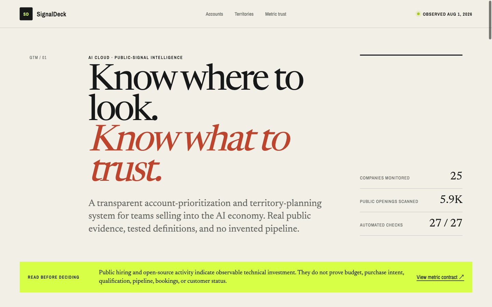

01 / 04 Case study + dashboard Read ↗SignalDeck
Account prioritization without pretending public signals are pipeline.
A tested RevOps product that combines real hiring, open-source, and model activity into an explainable research queue, territory-capacity scenario, and evidence-linked GTM briefing.
5,886live openings scanned
22planning-eligible accounts
27/27dbt operations passed
GTMRevOpsSQLdbtTerritory PlanningResponsible AI